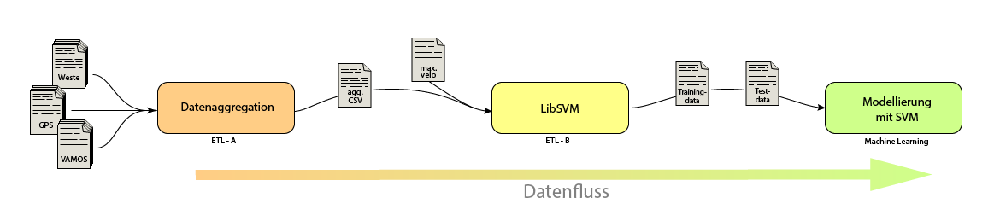
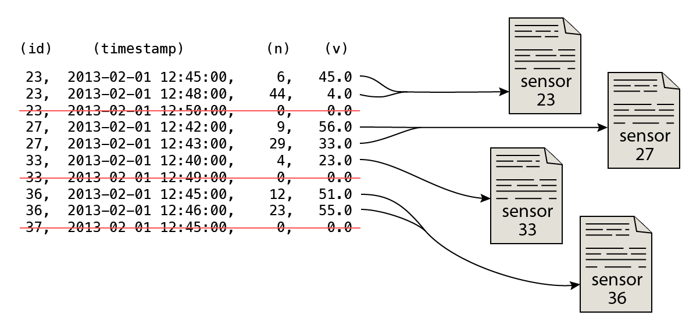
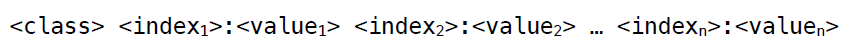
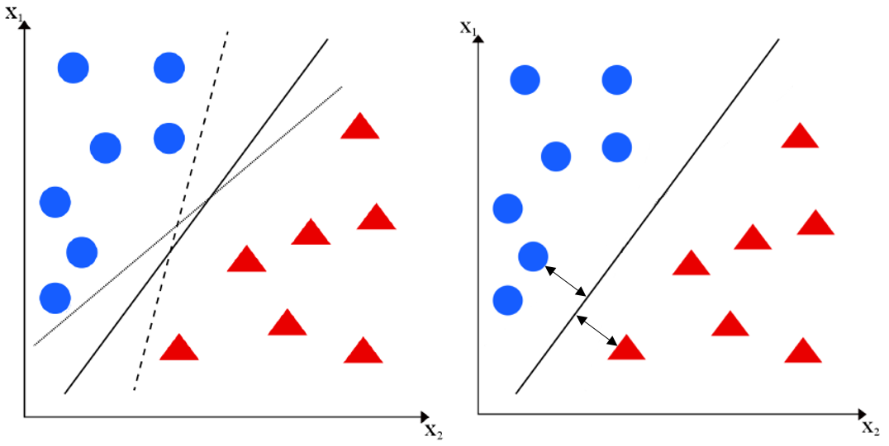

MAGDa - Management und Analyse Geotemporaler Daten
Entwicklung einer Datenverarbeitungspipeline zur Prognose von Straßenverkehrssituationen
Posted am 18.05.2017Einleitung
Möchte man mit Apache Spark statistische Modelle zur Prognose entwickeln, muss ein Weg gefunden werden, Daten aus zahlreichen Quellen in verfahrensrelevante Strukturen überführen zu können. Die Arbeit mit Spark und dessen Modul MLlib, einer Erweiterung mit Algorithmen für das maschinelle Lernen, setzt ein spezielles Datenformat voraus — das sogenannte LIBSVM-Format.
Der Grund, weshalb es in diesem Beispiel mehrere Stationen auf dem Weg zum fertigen Modell gibt, liegt in der flexiblen Anpassung der Zwischenschritte. Nach jedem Arbeitsschritt können Eingriffe in die Daten und die Art der Zusammensetzung vorgenommen werden, da in der Datenanalyse Modelle stets für präzisere Ergebnisse überarbeitet werden. Um beispielsweise eine Über- bzw. Unteranpassung der Daten vorzubeugen, brauchen somit nicht alle Schritte von vorne durchgeführt werden. Das spart Zeit und Ressourcen.
In diesem Beispiel wird eine Klassifikation anhand der gemessenen Geschwindigkeit vorgenommen. Die sogenannte Straßenverkehrssituation soll einen stockenden Verkehr oder eben nicht stockenden Verkehr beschreiben. Die Geschwindigkeit der Fahrzeuge, die über eine Messstation fahren, ist die ausschlaggebende Information. Hierbei wird ein Schwellwert festgesetzt, der, sobald er überschritten wird, den Verkehr als nicht stockend klassifiziert.
Die Pipeline im Überblick
Die Pipeline besteht aus drei Einheiten. Die erste Einheit besitzt die Aufgabe relevante Daten aus allen Datenquellen zu extrahieren und sie in ein geeignetes Format zur weiteren Verarbeitung bereitzustellen. In der Grafik ist das Modul mit dem Namen Datenaggregation versehen.
Die zweite Einheit, namens LibSVM, soll die zuvor aggregierten Daten in das spezielle LIBSVMFormat transformieren, mit dem letztendlich eine Modellierung durchgeführt wird.
Das letzte Modul wird anhand der LIBSVM-Dateien das statistische Modell berechnen bzw. anpassen und Prognosen basierend auf diesen Daten treffen.
Datenaggregation
Innerhalb der Datenaggregation sollen die einzelnen Dateien zusammengefasst, gefiltert und aggregiert werden, so dass am Ende des Prozesses eine neue Datei entsteht. Diese einzelne Datei enthält dann alle relevanten Informationen, um das statistische Modell mittels der Support Vector Machine zu berechnen.
Der erste Schritt besteht darin, Zugriff auf alle Dateien zu haben. Für diesen Zweck wurden sie in das Hadoop Distributed File System (kurz HDFS) übertragen, um von hier mit der Technologie Spark (bzw. und Hadoop) die oben genannten Schritte durchzuführen. In diesem Beispiel wurde mit den folgenden Informationen gearbeitet:
- VAMOS-Daten — Verkehrsinformationen gemessen durch Doppelinduktionsschleifen in Dresden
- GPS-Informationen — Standortbestimmung der einzelnen Doppelinduktionsschleifen
- WESTE-Archiv —Wetterinformationen aus Dresden vom Deutschen Wetterdienst
- Maximal erlaubte Geschwindigkeit pro Straßenabschnitt
Alle Daten liegen im CSV-Format vor. Als Ergebnis wird daher ebenfalls eine CSV-Datei generiert, da sich eine tabellarische Struktur für eine Auflistung von Informationen nach Zeit besonders eignet. In diesem ersten Schritt wird die Datei mit der erlaubten Höchstgeschwindigkeit weggelassen, da sie erst beim zweiten Modul LibSVM für die Klassifizierung von Relevanz ist.
Bis auf die GPS-Informationen haben alle Daten einen Zeitbezug. Die Informationen vom Weste-Service des Deutschen Wetterdiensts werden hinsichtlich der Lufttemperatur und der Niederschlagsmenge stündlich aktualisiert und die Verkehrsinformationen werden immer in eine Minute zusammengefasst.
Für die Analyse wurde ein Aggregationsintervall von 15 Minuten festgelegt, somit müssen die Verkehrsdaten weitestgehend zusammengefasst werden. Bei genauerer Betrachtung besitzen die Verkehrsdaten jedoch unterschiedliche Informationen. Die Anzahl der gemessenen Fahrzeuge kann beispielsweise schlicht aufsummiert werden. Die Durchschnittsgeschwindigkeit hingegen nicht. Es existieren durchaus Einträge, in denen kein Fahrzeug innerhalb des Ein-Minuten-Intervalls über die Messstelle fuhr. Hier die Durchschnittsgeschwindigkeit einfach zu mitteln wäre ein Fehler. Es gilt die Einträge ohne Geschwindigkeitsangabe (sprich mit 0 km/h) herauszufiltern, bevor aggregiert wird. Aus einer Angabe wie 0 km/h ist nicht ersichtlich, ob der Verkehr zumvollkommenen Stillstand kam oder sich kein Fahrzeug auf der Fahrstrecke befand.
Die Wetterdaten müssen hingegen aufgeteilt werden, da sie stets einen 1-Stunden-Intervall abbilden. Aus einem Eintrag werden somit vier Einträge für die 15-Minuten-Intervalle in der Zieldatei.
Da die GPS-Dateien keinen Zeitbezug besitzen, können die Informationen an die Informationen angehängt werden. Es muss hierbei lediglich ein Abgleich der Sensor-ID stattfinden.
Sind alle Informationen korrekt zu 15-minütigen Intervallen zusammengefasst worden, so kann die Datei in das HDFS geschrieben werden. Ein weiterer Vorteil ist an dieser Stelle, dass andere Methoden des maschinellen Lernens nun zum Vergleich herangezogen werden können. Der nächste Schritt, die Transformation in das LIBSVM-Format, ist für die Support Vector Machine oder auch die logistische Regression von Belang. Generell kann die generierte Datei auch für andere Zwecke genutzt werden.
LIBSVM
Das zweite Modul innerhalb der Verarbeitungspipeline transformiert die zuvor aggregierten Daten in das LIBSVM-Format. Hierbei handelt es sich, wie eingangs erwähnt, um ein spezielles Austauschformat für die Arbeit mit Support Vector Machines (bzw. logistische Regression innerhalb Apache Spark MLlib). Wie der Name bereits verrät wird das statistische Modell für die spätere Prognose anhand von Vektoren angepasst.
Das Format ist nach dem folgenden Schema aufgebaut.
Jede Zeile innerhalb der LIBSVM repräsentiert einen Vektor. Der erste Wert in jeder Zeile ordnet den Vektor einer Klasse zu. Diese wird mit 0 oder 1 angegeben. Soll eine Multiklassen-Anpassung erfolgen, so können hier weitere Werte in aufsteigender Reihenfolge angegeben werden. Danach folgen die Indizes — ebenfalls in aufsteigender Reihenfolge in ganzen Zahlen — und getrennt durch einen Doppelpunkt die einzelnen Werte als reelle Zahl.
In diesem Beispiel steht die Klasse 0 für den stockenden Verkehr und die Klasse 1 für den nicht stockenden Verkehr. Die Klasse errechnet sich anhand der erlaubten Höchstgeschwindigkeit. Wird eine Geschwindigkeit von max(v) * 0,5 als Schwellwert gesetzt, so lautet bei einer innerstädtischen Straße (max(v) = 50 km/h) der Schwellwert 25 km/h. Sollten innerhalb des 15-minütigen Intervalls keine Fahrzeuge gemessen werden (sprich v = 0 km/h und n = 0), so wird die Klasse 1 gewählt.
Ein großer Vorteil dieses Moduls ist die Anpassbarkeit der zu Modellbildung benötigten Daten. Sollen beispielsweise nur bestimmte Monate für das Training der Maschine oder nur die Lufttemperatur statt der Niederschlagsmenge verwendet werden, so kann das als Programmargument übergeben werden. Hier kann sehr präzise bestimmt werden wie die Trainings- bzw. Test-LIBSVM-Datei auszusehen hat.
Am Ende des Prozesses soll mindestens die Trainingsdatei stehen — eine Test-LIBSVM wird eventuell benötigt, um die Auswahl der einzelnen Vektorattribute zu überprüfen. Die Training-LIBSVM wird dann im kommenden Schritt für die Modellbildung verwendet.
Modellbildung mit SVM
Die letzte Etappe der Verarbeitungspipeline ist die Modellbildung durch die Support Vector Machine.
Wenn man mehrere Vektoren repräsentativ für eine spezielle Klasse hat, so stellt sich die Frage nach der Separation der einzelnen Vektoren in ihre jeweilige Klasse (Abbildung links, hier nur in einem zweidimensionalen Raum dargestellt, kann auf einen n-dimensionalen Raum mit einer Hyperebene übertragen werden). Im Vektorraum soll eine Diskriminante für diese Trennung sorgen. Die Herausforderung ist nun das Festlegen einer Diskriminante, mit der neue Objekte korrekt klassifiziert werden. Die Support Vector Machine wählt die Diskriminante, die einen maximalen Abstand zu den zu trennenden Vektorobjekten besitzt (Abbildung rechts).
Neu zu klassifizierende Objekte werden in die Gleichung zur Berechnung der Diskriminante eingesetzt und alleine am berechneten Vorzeichen kann das Objekt einer Klasse zuordnen werden. Bei einem positiven Wert liegt dass Objekt rechts von der Diskriminante, ansonsten links davon.
Mit Apache Spark kann das angepasste Modell gespeichert und für zukünftige Zwecke und Prognose wieder herangezogen werden. Mit Hilfe dieser Klassifikation können Staustellen im Verkehrsfluss erkannt und vorhergesagt werden. Beispielsweise ist es möglich, einen Stau in 15 Minuten mit einer hohen Eintrittswahrscheinlichkeit vorherzusagen. Verkehrsplaner können derartige Informationen zur Verkehrsoptimierung heranziehen.